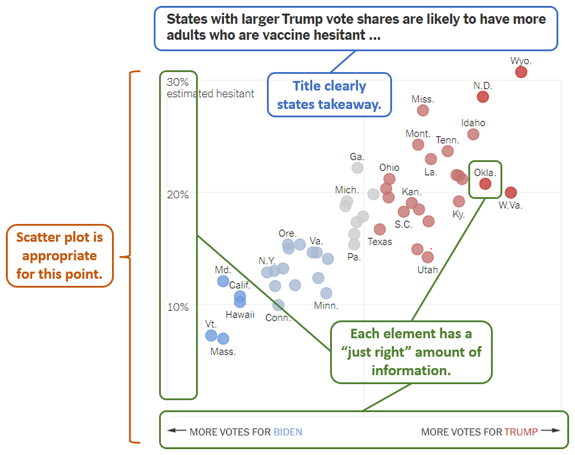

Call me a geek, but I love a good data visualization. What I love even more is a visualization with a story. So when I read the NY Times article “Least Vaccinated U.S. Counties Have Something in Common: Trump Voters” from Danielle Ivory, Lauren Leatherby, and Robert Gebeloff, the visuals left a big impression on me. The article shows that when it comes to the Covid-19 vaccine, there’s a dividing line between political parties. I think there’s a lot to learn from the graphics in this article; the lessons I took away are:
Every graphic should make a point. Ideally, you should be able to title the chart with a one-sentence takeaway that advances your narrative. If there’s more than one takeaway, it might make sense to add labels to highlight certain data points, or it might make sense to just make a separate chart.
Sometimes all you need is a scatter plot. There’s often the temptation (at least for me) to shoehorn cool-looking plots onto the data, like spiral plots or Marimekko charts. But sometimes, the point is much more clearly demonstrated in a good old-fashioned scatter-plot, bar chart, or line graph.
You only need a “just right” amount of information. I find the “default” chart often includes too much information, which runs the risk of distracting or obsuring the point. Of course, what’s considered “just right” will depend on the intended audience (a finance professor testifying in court might want to be armed with more details than a layperson reading a NY Times article).
